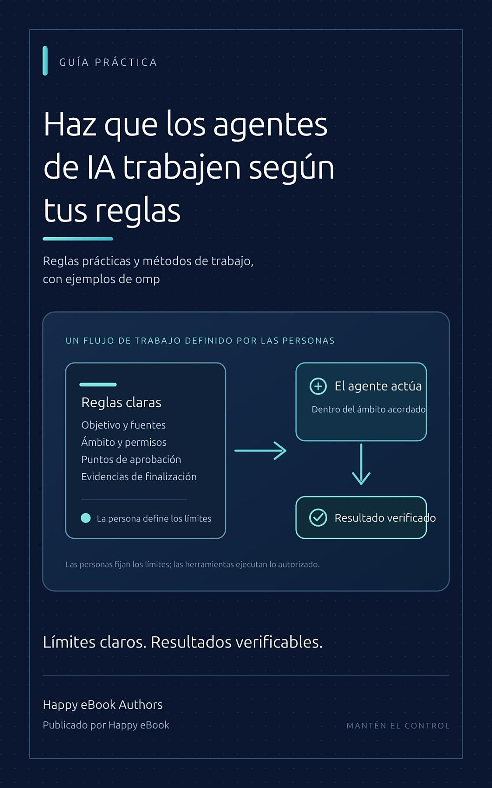

Haz que los agentes de IA trabajen según tus reglas
Reglas prácticas y métodos de trabajo, con ejemplos de omp

Haz que los agentes de IA trabajen según tus reglas
Reglas prácticas y métodos de trabajo, con ejemplos de omp
Los agentes de IA pueden leer archivos, usar herramientas y modificar documentos. Para trabajar con fiabilidad, conviene preparar el encargo antes de la primera acción: definir el objetivo, identificar las fuentes, delimitar el espacio de trabajo, decidir qué acciones requieren aprobación humana y establecer cómo se comprobará el resultado. Haz que los agentes de IA trabajen según tus reglas es una guía práctica para quienes quieren delegar en asistentes de IA tareas de investigación, revisión, organización de archivos y otros procesos de varios pasos sin ceder todas las decisiones. El libro explica cómo redactar reglas de trabajo útiles, preparar un espacio de trabajo más seguro, entender de dónde proceden las configuraciones, limitar permisos y flujos de datos, convertir tareas repetidas en habilidades reutilizables y verificar o corregir los resultados. Los ejemplos usan omp, pero distinguen las prácticas generales de los comportamientos propios de una herramienta o versión. No hace falta ser programador. Cada ejemplo explica su objetivo, sus límites, el resultado esperado y las comprobaciones necesarias. Los ejercicios usan archivos ficticios y no requieren servicios de pago, cuentas personales ni modificaciones de archivos fuente reales. La obra incluye quince capítulos, cuatro apéndices, plantillas adaptables y listas de comprobación. Los ejemplos son puntos de partida que deben revisarse, no una garantía de que un agente obedecerá siempre las instrucciones escritas. Mantén el control de los permisos, las aprobaciones y las decisiones importantes.
作品介紹；目前未提供購買或試閱入口